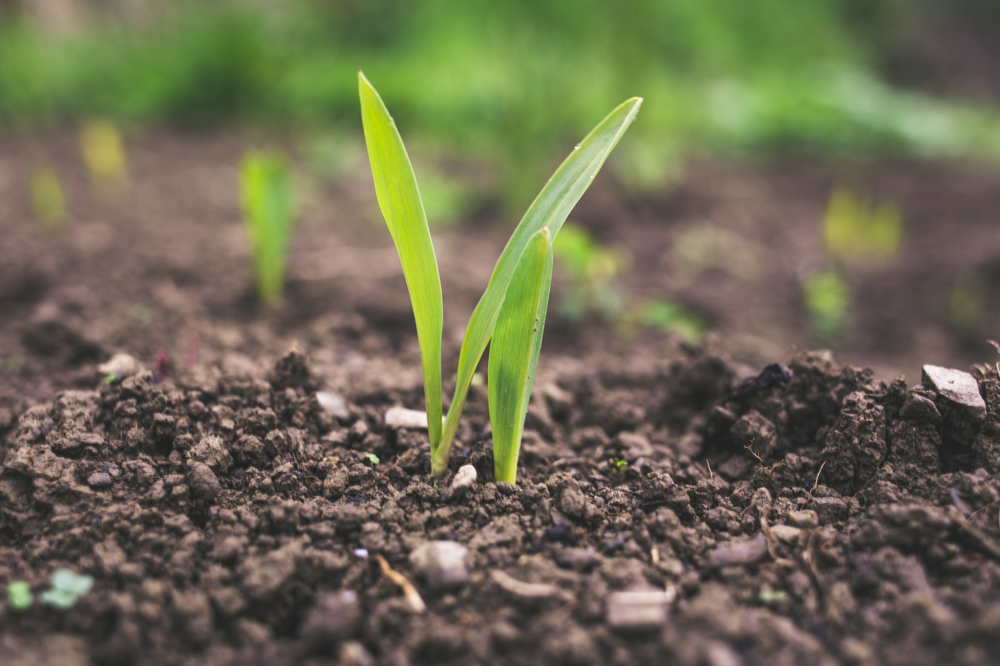

How will we feed 10 billion people? How can natural resources be used even
more efficiently? What do the students of today need to understand about
agriculture to feed the people of tomorrow?
Ag-Food-Tech is an emergent strength of UC Merced’s faculty, with
representation of experts from across the campus. Faculty address many
aspects of production and adapt tools for food processing, contributing to
many different production systems and California’s diversity of over 400
crops.
CITRIS Research on Ag-Food-Tech, or CRAFT, hosts the Ag-Bag for industry
leaders to speak with faculty, Ag-Food-Tech roundtables to learn from
industry leaders, and other events and programs.

Funded in 2021 by the University of California Office of the President
Multi-Campus
Research Program Initiative, the Labor and Automation in California Agriculture
(LACA) assembles interdisciplinary researchers to solve food system resilience
and
human-centered agriculture technology to transform the workforce and environment
of
the future. This MRPI includes researchers from University of California
Mercerd,
Berkeley, Davis, and Riverside.

Building a future in the heart of the San Joaquin Valley means participating in
the
most productive agricultural area in the world. This program will help students
explore opportunities in multiple aspects of agriculture. Students will learn
about
agriculture generally, from production to mechanical harvesting and processing,
from
massive processing plants to small farm stands.

A new article, "The Future of Machines" covers key areas of UC Merced research:
Addressing the Drought, Introducing RAPID, Preparing for the Future,
Drinking in the Data, Gettng on Board, and On the Road to the Future.
Article

Integrated Data Enabled Water (DEW) Trade research, extension,
& education will accelerate the adoption of agricultural & water
technologies, frameworks and institutions to sustain and to increase
flexibility of agrosystems and dependent communities.
Learn More